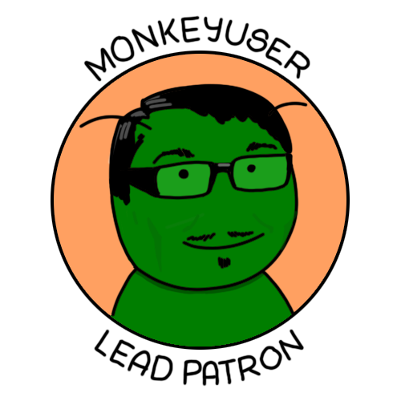
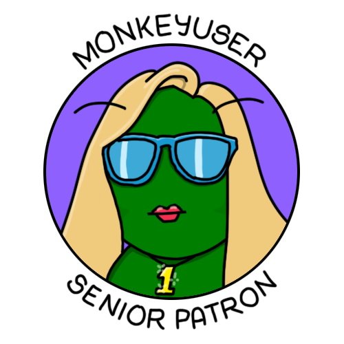
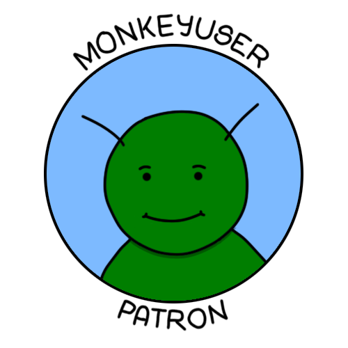

<div class="patreon">
  <a href="https://www.patreon.com/bePatron?u=4785170" data-patreon-widget-type="become-patron-button">Become a Patron!</a><script async src="https://c6.patreon.com/becomePatronButton.bundle.js"></script>
  
  <div>
    <span class="title">Lead Patrons</span>
    <span class="patron">
      
      <span>Tudor Luca</span>
    </span>
  </div>

  <div>
    <span class="title">Senior Patrons</span>
    <span class="patron">
      
      <span>Dana Abrudan</span>
    </span>
  </div>

  <div class="intermediate">
    <span class="title">Intermediate Patrons</span>
    <span class="patron">
      
      <span>Tony</span>
    </span>
    <span class="patron">
      
      <span>Matthew Bidewell</span>
    </span>
  </div>


</div>